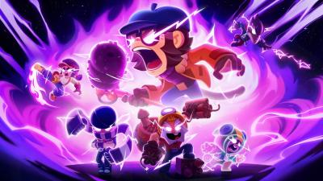
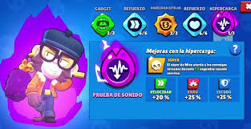
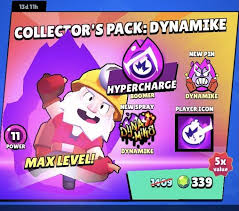
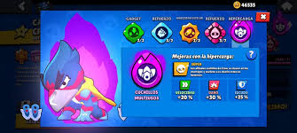

Te decimos cuales son las nuevas hipercargas implementadas y te explicamos cuales son las habilidades:
Esta hipercarga hace que cuando Mico este en el aire recarge un 20% mas de vida y que paralice a los enemigos de su alrededor por 1,5 segundos.Su coste es de 5000 de oro.

Lo que hace esta reciente hipercarga es que ahora Fang pueda atravesar cualquier tipo de estructura con su ulti y que haga un 5% mas de daño.Su coste en oro es de 5000.
Lo que hace esta hipercarga es que la ulti de Dynamike pasa de hacer 6000 de daño a 7500 y ademas te garantiza un 20% mas de velocidad.Su coste en oro es de 5000.
Lo que hace la hipercarga es que Crow inflinge un 50% mas de daño con su ulti y ademas cuando la utiliza sus dagas vuelven hacia el como bumerans.Su coste en oro es de 5000.
